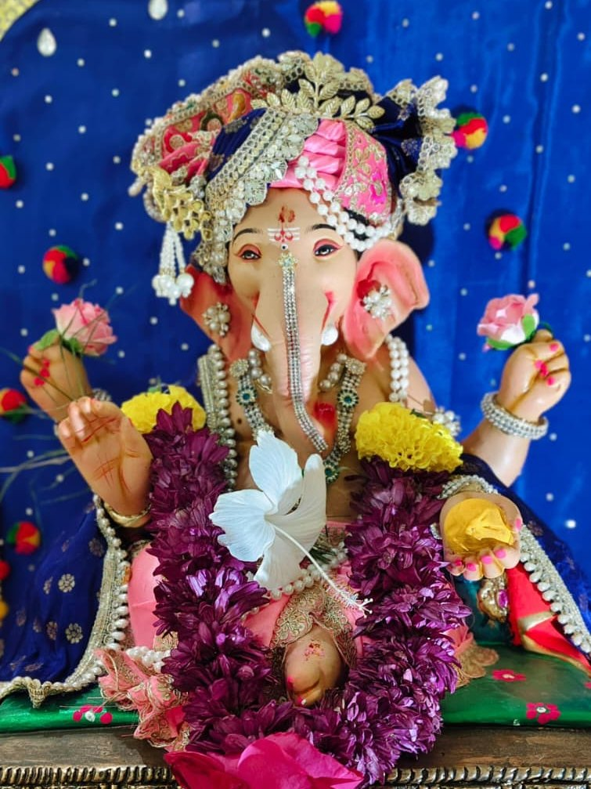

॥ श्री गणेशाय नमः ॥
Ganpati Bappa ke darshan ko 🌺
Har shubh shuruaat Ganesh Ji se. Aaj line bhi nahi hai — seedha darshan 😄
Ab tak bhakt darshan kar chuke hain 🙏
🔊 Awaaz on rakhiye — shankh, ghanti aur aarti ke saath
